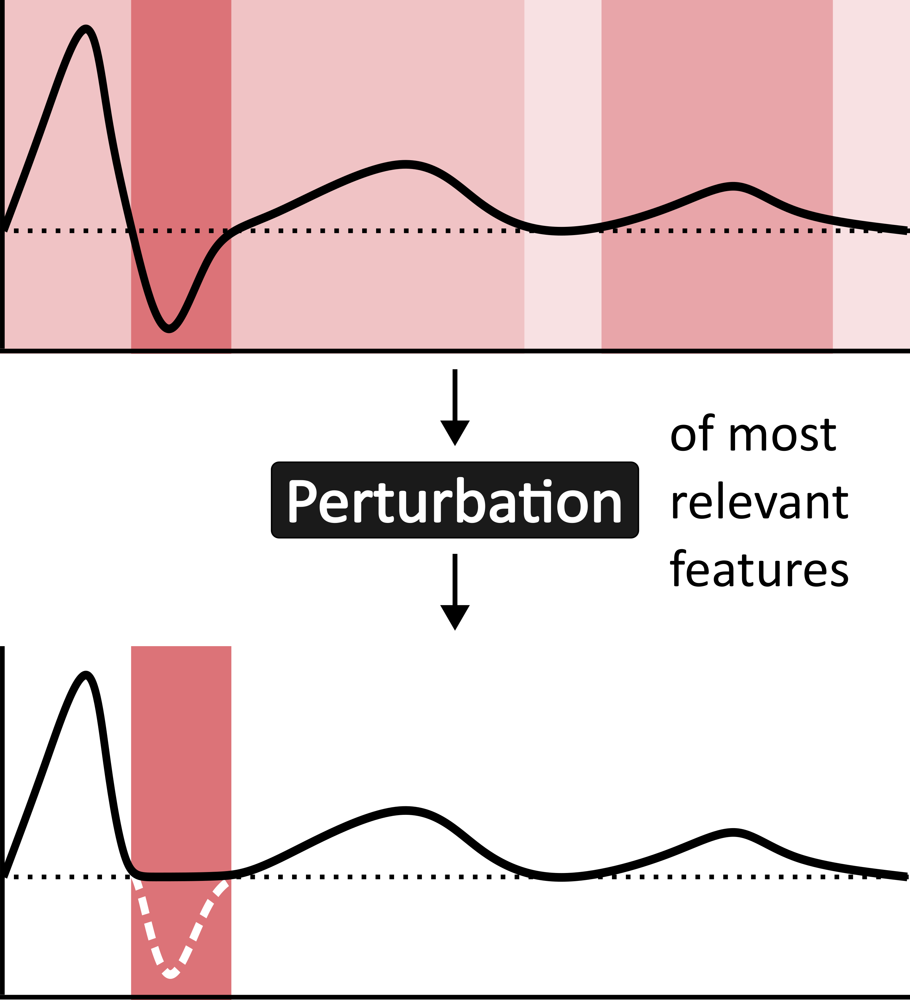

Paper 1
Class-dependent perturbation effects in evaluating time-series attributions
Takeaway: perturbation-based metrics depend very much on their parameters, and can look strong for one class and weak for another, even within the same dataset and model, without us knowing why that happens.
We evaluate time-series attribution methods across datasets, model architectures, and perturbation strategies. The results suggest that class-aware reporting may be needed, because aggregate scores can hide systematic differences between classes.
Baer, G., Grau, I., Zhang, C., & Van Gorp, P. (2025). Class-Dependent Perturbation Effects in Evaluating Time Series Attributions. In R. Guidotti, U. Schmid, & L. Longo (Eds.), Explainable Artificial Intelligence (pp. 292–314). Springer Nature Switzerland. https://doi.org/10.1007/978-3-032-08330-2_14
